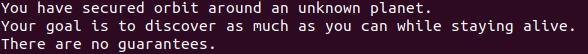

Built July 2019 - Ongoing
THE STORY
Orbit is the program I wrote with Sandi Metz.
In my very first developer interview I was asked to write a version of the game Monopoly on the whiteboard. I did well enough to get the job, but I left the interview with the frustrating impression that I didn’t perform as well as I thought I could. So I went home and started writing Orbit.
Orbit the program began as a single class that moved players around a game board and awarded ‘fuel points’ when a player completed a full orbit. Players would take turns driving their ships in an attempt to visit every ‘sector’ of the game board before running out of fuel. It was the most simplified version of Monopoly I could design, but space-themed.
When I started my job I set Orbit aside. I forgot about it until months later, when my job asked me to build a feature that required working with an important set of classes in our codebase called ‘connectors.’ The connectors were responsible for querying our clients’ APIs, as well as our database, and bringing back data that we could parse and map and use a bunch of different ways. Because they needed to be tailored to the variations in our clients’ endpoints, the connectors were a suite of classes that had a lot of maddeningly subtle differences in behavior. And because they acted as critical connective tissue between many different parts of our app, the connectors propagated hidden and unexpected dependencies all over the codebase. They were a set of classes that embodied Sandi Metz’s concept of the “Death Star Anti-pattern”--the classes in your codebase that exhibit both high churn and high complexity. In short, they were a pain to work with. And it was my job to work with them.
After looking through Sandi’s books and talks for guidance, as well as the classic text Refactoring by Martin Fowler and Kent Beck, I realized that what I really needed was an Object Oriented Sandbox—a program where the stakes were low and I could practice the concepts of Object Oriented Design by building and refactoring and building some more, challenging myself on each iteration to hold the growing complexity within the principles and best practices that Sandi prescribed. And so Orbit became my never-ending Object Oriented Sandbox. The game itself became the ship I would use to explore the universe of OO.
As of this writing Orbit has 15 20 classes and about 2000 2500 lines of code, as well as a dozen data files that feed items, sectors, and events into the Orbit universe. The program is still relatively small, but it feels endlessly extendable. In the current version of the game, players can collect and use items, send messages to one-another, and change directions and speed in their exploration of the sprawling game board. But the most interesting piece of the design puzzle was creating the console.
Because the entire game happens on the command line I wanted some sort of graphic output that keeps the player entertained and gives the feel of interacting with a (modest) command center on a spaceship. So I devised a frame that would display the player's current stats and provide a viewing area for important messages that ocurr during the game. In order to pull this off, I needed to do things like chop a long string on the correct whitespace, center output with whitespace buffers, and output the frame with consistent formatting for multiple players who had constantly-changing stats. Doing this all within the limitations of the terminal--which only prints left-to-right, top-to-bottom--was trickier than it seems. The solution was a Formatter Class that exposed public methods like buffer_string, print_frame, and print_as_handwriting. The latter is a fun feature that accepts a formatted string and outputs to the screen one character at a time, quickly, as though the message were being typed hurriedly by an astronaut under duress. None of this is earth-shattering stuff, but the clean interlocking of behaviors within OO principles is satisfying. What's even more satisifying is that the program grows in value exponentially as it becomes more complex, because it provides opportunities to practice OO design where it really shines: in a complex, interdependent, constantly changing application.
The most recent release of Orbit can be found at this github repo, but the program will continue to evolve. Who knows, by the time you read this maybe players will be able to time-travel. Thanks for reading!